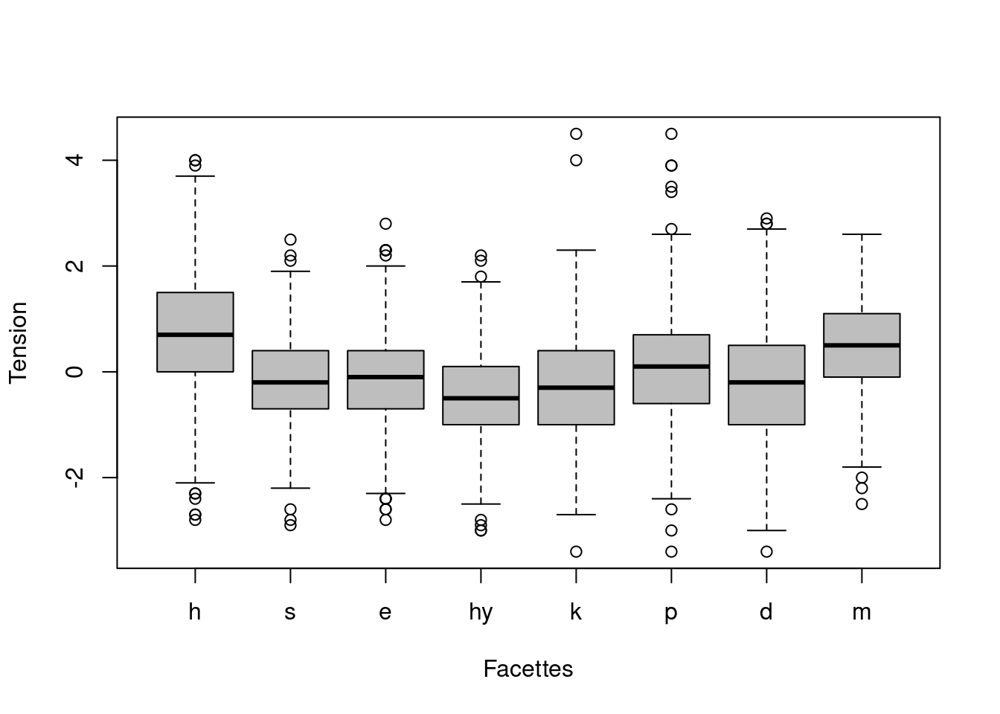
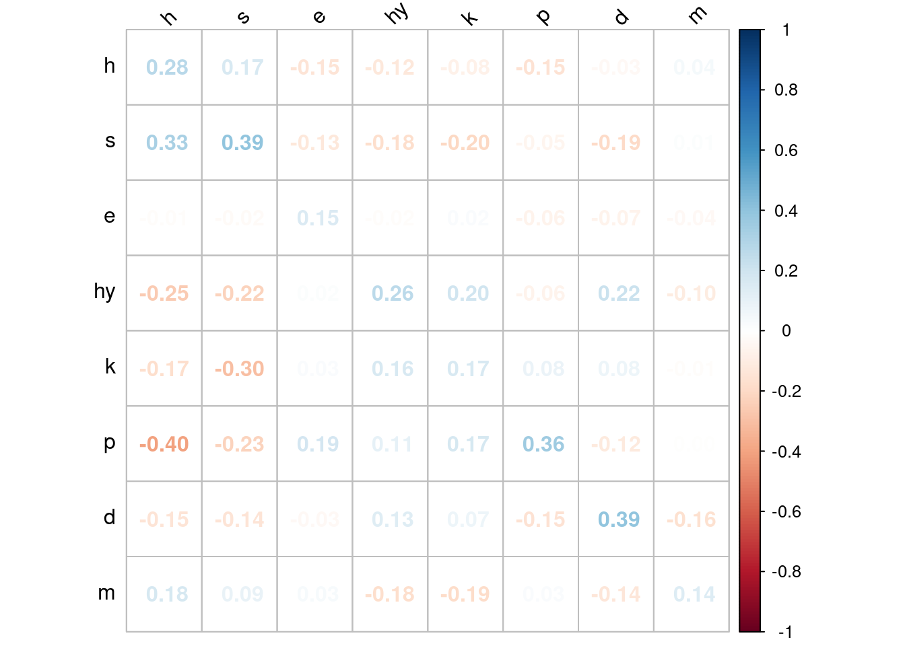

Introduction
Le test de Szondi est un test projectif qui vise à révéler le fonctionnement pulsionnel d’une personne en référence à la psychologie du choix de Szondi, Schotte, & Van Reeth (1967). Il se compose de six séries de huits photographies d’anciens patients psychiatriques. Lors de la passation du test, chaque série est présentée au participant. Derleyn (2008, p. 49) propose la consigne suivante :
Je vais vous montrer quelques photos de différentes personnes et tout ce que vous avez à faire est de me montrer LES DEUX plus antipathiques (que vous aimez le moins) et LES DEUX plus sympathiques (que vous aimez le plus). Evidemment, il n’y a pas de mauvais choix car aimer ou pas un visage est absolument matière à goût individuel
Après cette première phase, le clinicien présente successivement les six groupes de quatre photographies qui n’ont pas été choisies avec la consigne suivant :
Maintenant, je vais vous montrer les quatre photos qui restent; regardez ces visages et désignez les deux que vous aimez le moins, qui vous semblent les plus antipathiques.
Les deux photographies restantes sont considérées comme sympathiques, par défaut. Les douze premiers choix sympathiques et les douze premiers choix antipathiques (soit 24 choix) constituent l’avant-plan (VGP - VorderGrundProfil) alors que les 24 autres choix constituent l’arrière-plan (EKP - Experimentelle Komplementär Profil).
Au test de Szondi, la tension résulte des choix positifs ou négatifs des photographies par le participant. S’il choisit de nombreuses photographies comme étant sympathiques, la tension est qualifié de positive et s’il choisit de nombreuses photographies comme étant antipathiques, la tension est qualifiée de négative. Ces tensions peuvent différer à l’avant-plan et à l’arrière-plan.
Interprétation de l’avant-plan (VGP)
Selon Derleyn (2008, p. 116), l’avant-plan représente :
[…] selon toute vraisemblance la partie émergée de l’iceberg, celle qui se donne à voir, ce que le sujet met en avant. Ce sont les tendances de surface, ce qui se passe à la surface de la vie. Le VGP représente donc le tableau clinique, le comportement observable, les symptômes, l’organisation défensive, les mécanismes de défense que le sujet met en jeu pour garder une certaine maîtrise de la situation.
Interprétation de l’arrière-plan (EKP)
Toujours selon Derleyn (2008, p. 118) :
On peut penser que l’EKP contient des tendances pulsionnelles actives mais dont les effets ne sont pas repérés par le sujet et dont, par conséquent, il ne possède pas la maîtrise. L’EKP interagit avec le VGP […] Il faut confronter l’avant-plan et l’arrière-plan, voir si l’arrière-plan redouble ou non l’avant-plan.
Difficultés relatives à l’interprétation des deux plans
Les deux plans permettent de dégager deux profils différents sans qu’il ne soit aisé de préciser leurs apports interprétatifs respectifs. Il ne semble pas exister de méthode précise lorsqu’il s’agit de les confronter. Mais avant de s’intéresser à la validité interprétative de ces deux plans, nous pouvons d’ores et déjà nous intéresser aux liens qui les unissent. Les choix lors de la première et lors de la seconde phase du test présentent-ils des tendances communes ou sont-ils indépendants les uns des autres ? Nous pourrions penser que la partie émergée de l’iceberg apporte une information sur la partie immergée. A l’inverse, il est possible que cette dernière apporte une information tout à fait nouvelle voire inverse à la première. La présente étude vise à mettre en évidence les liens entre les choix opérés à l’avant-plan et ceux opérés à l’arrière-plan du test de Szondi. A notre connaissance, aucune donnée psychométrique ne répond encore précisément à cette question.
Méthode
Participants
Les participants sont 457 détenu(e)s belges admissibles à une libération anticipée en cours d’évaluation psychosociale. Le / la psychologue en charge de l’évaluation a administré le test de Szondi à dix reprises. L’échantillon se compose de 421 (92%) hommes et de 36 (8%) femmes. L’âge moyen est égal à 38.25 (ET = 11.52, min = 18, max = 79) ans.
Traitement des données
Notre base de données contient le nombre de photographies choisies comme étant sympathiques et antipathiques pour chacune des dix passations pour chaque participant. Par exemple, la variable appelée onehp est le nombre de photographies h estimées sympathiques au premier profil de l’avant-plan. De la même manière, la variable appelée tenmmekp est le nombre de photographies m estimées antipathiques au dixième profil de l’arrière-plan
Pour estimer la tension d’un protocole de dix profils de Szondi, nous avons choisi de faire la somme de tous les choix positifs aux dix profils de laquelle nous avons soustrait la somme de tous les choix négatifs aux dix profils. Notre but étant d’obtenir une variable qui rend compte d’une tendance générale de tension pour le protocole (constitué de dix profils) dans son ensemble. La formule est alors la suivante pour la tension du facteur h :
Somme des choix positifs pour h aux 10 profils à l’avant-plan
\[ tensionhp = onehp + twohp + threehp + fourhp + fivehp + sixhp \\+ sevenhp + eighthp + ninehp + tenhp \]
Somme des choix négatifs pour h aux 10 profils à l’avant-plan
\[ tensionhm = onehm + twohm + threehm + fourhm + fivehm + sixhm \\+ sevenhm + eighthm + ninehm + tenhm \]
Tension globale pour l’ensemble du protocole à l’avant-plan
\[ tensionh = (tensionhp-tensionhm)/10 \]
Le calcul est similaire pour la tension à l’arrière-plan (EKP).
Somme des choix positifs pour h aux 10 profils à l’arrière-plan
\[ tensionhpekp = onehpekp + twohpekp + threehpekp + fourhpekp + fivehpekp + sixhpekp \\+ sevenhpekp + eighthpekp + ninehpekp + tenhpekp \]
Somme des choix négatifs pour h aux 10 profils à l’arrière-plan
\[ tensionhmekp = onehmekp + twohmekp + threehmekp + fourhmekp + fivehmekp + sixhmekp \\+ sevenhmekp + eighthmekp + ninehmekp + tenhmekp \]
Tension globale pour l’ensemble du protocole à l’arrière-plan
\[ tensionhekp = (tensionhpekp-tensionhmekp)/10 \] Ce calcul est répété pour chaque facteur du test de Szondi tant à l’avant-plan qu’à l’arrière-plan. Nous disposons dès lors de (8 x 2 =) 16 variables de tension.
Résultats
La Figure 1 montre les scores de tension pour chaque facteur à l’avant-plan.
Ce sont les photographies m qui sont estimées les plus sympathiques par les participants alors que ce sont les photographies hy qui sont estimées les plus antipathiques par les mêmes participants.
La Figure 2 montre les scores de tension pour chaque facteur à l’arrière-plan.

Pour ce plan, ce sont les photographies h qui sont estimées les plus sympathiques par les participants alors que ce sont les photographies hy qui sont estimées les plus antipathiques par les participants.
La Figure 3 montre les corrélations (Rho de Spearman) entre toutes les tensions à l’avant-plan et celles obtenues à l’arrière-plan.

C’est la diagonale qui nous intéresse particulièrement car elle indique le lien entre les choix faits à l’avant-plan et à l’arrière-plan pour chaque facteur. Les huit corrélations sont toutes significatives à p < .001 et indiquent un lien positif entre les choix opérés à l’avant-plan et ceux opérés à l’arrière-plan. Nous remarquons que ce lien est le plus élevé pour les facteurs s et d mais plus faible pour les facteurs e, k et m.
Discussion
Les résultats obtenus permettent de constater que les participants estiment certaines photographies plus sympatiques (celles du facteur m par exemple) ou antipathiques (celles du facteur k par exemple) que d’autres. En outre, les choix opérés lors de la seconde phase du test sont congruents avec ceux opérés lors de la première phase. Il semble donc exister une tendance commune aux deux plans puisque les choix à l’un confirment partiellement ceux à l’autre. Toutefois, cette confirmation n’est que partielle. En effet les deux stratégies de choix ne se recouvrent pas totalement, surtout pour certains facteurs tels que e, k et m. Les informations de l’arrière-plan ne sont dès lors pas entièrement redondantes avec celles du premier. A l’heure actuelle, il nous est impossible de dégager les pistes interprétatives d’un point de vue psychologique sur base de nos résultats. Ils permettent toutefois de mieux comprendre les liens entre les deux plans du test de Szondi.
Les références
Derleyn, P. (2008). Manuel théorique et pratique du Szondi. Bruxelles, Hayez.
Szondi, L., Schotte, J., & Van Reeth, C. (1967). De la psychologie du choix. Revue Philosophique de Louvain, 65(87), 332‑355. https://doi.org/10.3406/phlou.1967.5397